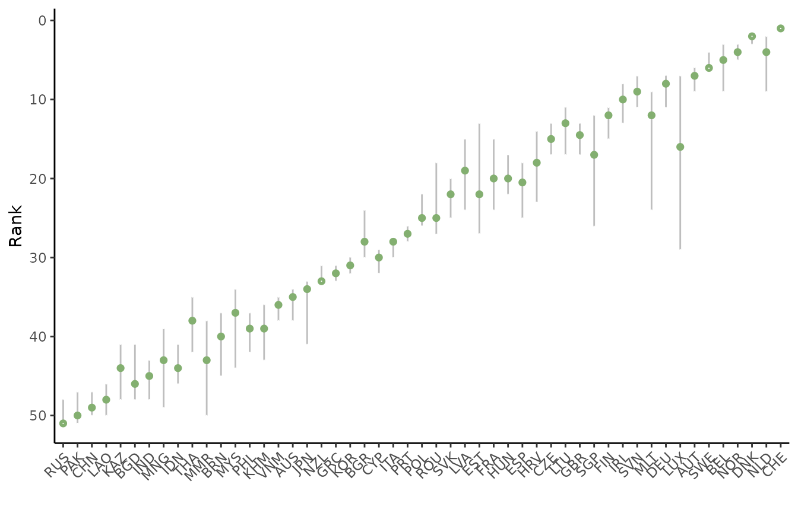
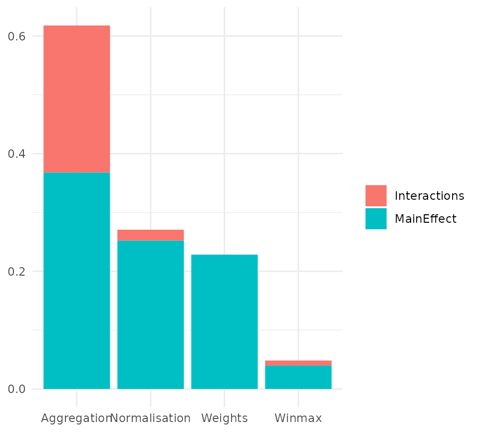
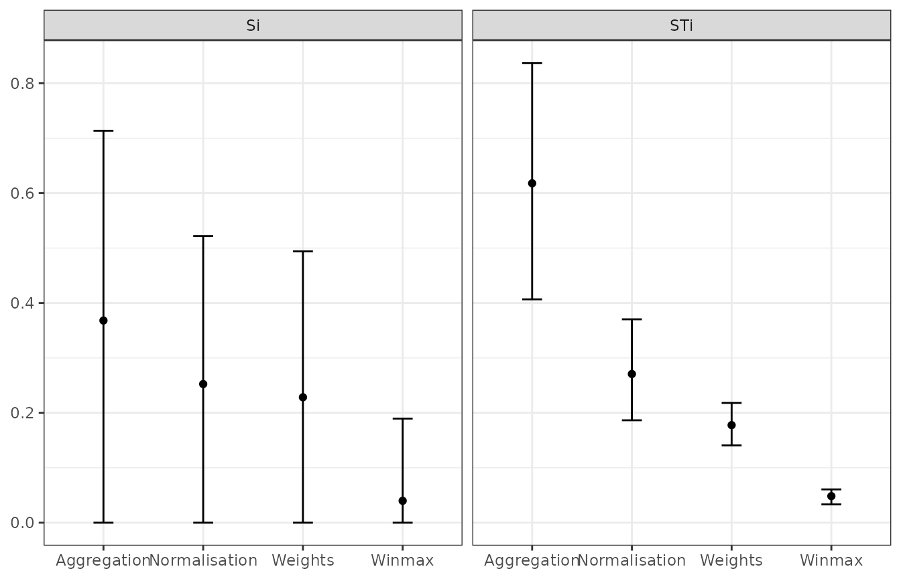

Introduction
Sensitivity analysis is often confused with uncertainty analysis. Uncertainty analysis involves estimating the uncertainty in the outputs of a system (here, the scores and ranks of the composite indicator), given the uncertainties in the inputs (here, methodological decisions, weights, etc.). The results of an uncertainty include for example confidence intervals over the ranks, median ranks, and so on.
Sensitivity analysis is an extra step after uncertainty analysis, and estimates which of the input uncertainties are driving the output uncertainty, and by how much. A rule of thumb, known as the Pareto Principle (or the 80/20 Rule) suggests that often, only a small proportion of the input uncertainties are causing the majority of the output uncertainty. Sensitivity analysis allows us to find which input uncertainties are significant (and therefore perhaps worthy of extra attention), and which are not important.
In reality, sensitivity analysis and uncertainty analysis can be performed simultaneously. However in both cases, the main technique is to use Monte Carlo methods. This essentially involves re-calculating the composite indicator many times, each time randomly varying the uncertain variables (assumptions, parameters), in order to estimate the output distributions.
COINr implements a flexible variance-based global sensitivity analysis approach, which allows almost any assumption to be varied, as long as the distribution of alternative values can be described. Variance-based “sensitivity indices” are estimated using a Monte Carlo design (running the composite indicator many times with a particular combination of input values). This follows the methodology described in this paper.
Defining the problem
The first step in a sensitivity analysis is to identify which assumptions to treat as uncertain, and what alternative values to assign to each assumption. Let’s begin with the “which”: think about all the ingredients that have gone into making the composite indicator: the data itself, the selection of indicators, and the methodological decisions along the way (which imputation method to use, if any; whether to treat outliers and in what way, which normalisation method, etc…). We cannot test everything, but we can pick a few assumptions that seem important, and where we have plausible alternatives that we could assign.
Here we will work with the familiar in-built example coin. You can see exactly how this is built by calling edit(build_example_coin) by the way.
library(COINr)
# build example coin
coin <- build_example_coin(quietly = TRUE)We will test four assumptions:
- The maximum number of Winsorised data points. This is currently set at five, but we will let it vary between 1 and 5 points.
- The normalisation method. By default the min-max method is used, but we will also consider the z-score as an alternative.
- The weights. We will test perturbing the weights randomly inside a set interval.
- The aggregation method. The example uses the arithmetic mean but we will also consider the geometric mean as an alternative.
Input distributions
Having now selected which assumptions to vary, we can now work on defining the distributions for each assumption. Sensitivity analysis is a probabilistic tool, so each input assumption is treated as a random variable, which means we have to define a distribution for each assumption.
The function to run a sensitivity in COINr is called get_sensitivity(). It takes a little understanding to get this set up properly. The argument that defines the input distributions is a list called SA_specs. This specifies which assumptions to vary, the distributions for each assumption, and where each assumption can be found in the coin. Let’s demonstrate by defining one part of SA_specs, for our first assumption: the maximum number of Winsorised points.
# component of SA_specs for winmax distribution
l_winmax <- list(Address = "$Log$Treat$global_specs$f1_para$winmax",
Distribution = 1:5,
Type = "discrete")Each uncertain assumption is defined by a list with three components. The “Address” component describes where in the coin the object of interest is found. You should look inside the coin to find this: notice that you don’t specify the name of the coin itself, i.e. it is not coin$Log$Treat$... but rather just $Log$Treat$....
Next is the “Distribution”, which essentially describes the alternatives for the parameter. Here we have entered 1:5, i.e. any integer between 1 and 5. Finally the “Type” entry should be set to either “discrete” or “continuous”. In the former, the distribution is assumed to be discrete, so that samples are taken from the alternatives given in “Distribution”. In the latter, the distribution is assumed to be continuous and uniform, and “Distribution” should be a 2-length vector specifying the upper and lower bounds of the parameter. Obviously in this latter case, the parameter must be numeric, and must be able to take non-integer values.
In summary, the list above specifies that the winmax parameter should be allowed to vary between 1 and 5 (integers). This list will be combined with lists for the other assumptions below, and input to get_sensitivity().
Now let’s see the entry for the normalisation method:
# normalisation method
# first, we define the two alternatives: minmax or zscore (along with respective parameters)
norm_alts <- list(
list(f_n = "n_minmax", f_n_para = list(c(1,100))),
list(f_n = "n_zscore", f_n_para = list(c(10,2)))
)
# now put this in a list
l_norm <- list(Address = "$Log$Normalise$global_specs",
Distribution = norm_alts,
Type = "discrete")This is a bit more complicated because when we switch between the min-max and z-score methods, we also want to use the corresponding set of parameters (f_n_para). That means that the parameter to target is the entire “global_specs” argument of Normalise(). We define two alternatives: one with min-max between 1 and 100, and the other being z-score with mean 10 and standard deviation 2. Notice that you need to be careful to wrap things appropriately in lists as required by each function.
Otherwise the rest is straight forward: we define the address and attach the norm_alts alternatives to the main list chunk. The distribution is discrete. Notice that each specification includes the “default” value of the assumption, not just the alternative(s).
Next is the weights, and this is also a special case. There are different ways we could approach changing the weights. First, we might have a small number of alternative weight sets, perhaps one is the original weights, one is from PCA, and one has been adjusted by hand. In that case, we could put these three sets of weights in a list and set the address to $Log$Aggregate$w, as a discrete distribution.
A second possibility would be to treat individual weights as individual parameters. This might be a good idea if we only want to vary a small number of individual weights, e.g. the sub-index weights (of which there are two). Then we could define one assumption for one weight and set the address as e.g. coin$Meta$Weights$Original$Weight[58] which is the location of the “Conn” sub-index weight, and similarly for the “Sust” sub-index. We would then set Type = "continuous" and set the upper and lower bounds as needed, e.g. c(0.5, 1) to vary between 0.5 and 1.
To instead get an overall perturbation of weights, we have to use a helper function. The get_noisy_weights() function is designed for this purpose: it generates replications of your set of weights, where each replication has some random noise added to it according to your specifications. Here is how it works. You take your nominal weights (those that you would normally use) and feed them into the function:
# get nominal weights
w_nom <- coin$Meta$Weights$Original
# build data frame specifying the levels to apply the noise at
noise_specs = data.frame(Level = c(2,3),
NoiseFactor = c(0.25, 0.25))
# get 100 replications
noisy_wts <- get_noisy_weights(w = w_nom, noise_specs = noise_specs, Nrep = 100)
# examine one of the noisy weight sets
tail(noisy_wts[[1]])
#> iCode Level Weight
#> 55 Environ 2 0.7733957
#> 56 Social 2 1.1125875
#> 57 SusEcFin 2 1.0734568
#> 58 Conn 3 1.0624768
#> 59 Sust 3 0.7820037
#> 60 Index 4 1.0000000The noisy_wts object is a list containing 100 data frames, each of which is a set of weights with slightly different values. The sample above shows the last few rows of one of these weight-sets.
Now we can feed this into our list chunk:
# component of SA_specs for weights
l_weights <- list(Address = "$Log$Aggregate$w",
Distribution = noisy_wts,
Type = "discrete")Notice that the distribution is defined as discrete because in practice we have 100 alternative sets of weights, even though we are emulating a continuous distribution.
Last of all we define the list chunk for the aggregation method:
## aggregation
l_agg <- list(Address = "$Log$Aggregate$f_ag",
Distribution = c("a_amean", "a_gmean"),
Type = "discrete")This is relatively straightforward.
Having defined all of our input distributions individually, it’s time to put them all together:
# create overall specification list
SA_specs <- list(
Winmax = l_winmax,
Normalisation = l_norm,
Weights = l_weights,
Aggregation = l_agg
)We simply put our list chunks into a single list. The names of this list are used as the names of the assumptions, so we can name them how we want.
Uncertainty analysis
That was all a bit complicated, but this is because defining a sensitivity analysis is complicated! Now COINr can take over from here. We can now call the get_sensitivity() function:
# Not run here: will take a few seconds to finish if you run this
SA_res <- get_sensitivity(coin, SA_specs = SA_specs, N = 100, SA_type = "UA",
dset = "Aggregated", iCode = "Index")This is not actually run when building this vignette because it can take a little while to finish. When it is run you should get a message saying that the weights address is not found or NULL. COINr checks each address to see if there is already an object at that address inside the coin. If there is not, or it is NULL it asks if you want to continue anyway. In our case, the fact that it is NULL is not because we made a mistake with the address, but simply because the w argument of Aggregate() was not specified when we build the coin (i.e. it was set to NULL), and the default “Original” weights were used. Sometimes however, if an address is NULL it might be because you have made an error.
Looking at the syntax of get_sensitivity(): apart from passing the coin and SA_specs, we also have to specify how many replications to run (N - more replications results in a more accurate sensitivity analysis, but also takes longer); whether to run an uncertainty analysis (SA_type = "UA") or a sensitivity analysis (SA_type = "SA"); and finally the target output of the sensitivity analysis, which in this case we have specified as the Index, from the aggregated data set.
If the type of sensitivity analysis (SA_type) is set to "UA", assumptions will be sampled randomly and the results will simply consist of the distribution over the ranks. This takes less replications, and may be sufficient if you are just interested in the output uncertainty, without attributing it to each input assumption. We can directly look at the output uncertainty analysis by calling the plot_uncertainty() function:
plot_uncertainty(SA_res)
Results are contained in the output of get_sensitivity() and can also be viewed directly, e.g.
head(SA_res$RankStats)
#> uCode Nominal Mean Median Q5 Q95
#> 1 AUS 35 35.28 35 34.00 38
#> 2 AUT 7 7.00 7 5.95 9
#> 3 BEL 5 5.15 5 3.00 9
#> 4 BGD 46 45.46 46 41.00 48
#> 5 BGR 30 27.59 28 24.00 30
#> 6 BRN 40 40.07 40 37.00 45This shows the nominal, mean, median, and 5th/95th percentile ranks of each unit, as a result of the induced uncertainty.
Sensitivity analysis
The process for performing a sensitivity analysis is the same, but we set SA_type = "SA".
# Not run here: will take a few seconds to finish if you run this
SA_res <- get_sensitivity(coin, SA_specs = SA_specs, N = 100, SA_type = "SA",
dset = "Aggregated", iCode = "Index", Nboot = 100)If you run this, you will see an important difference: although we set N = 100 the coin is replicated 600 times! This is because a variance based sensitivity analysis requires a specific experimental design, and the actual number of runs is \(N(d+2)\), where \(d\) is the number of uncertain assumptions.
Notice also that we have set Nboot = 100, which is the number of bootstrap replications to perform, and is used for estimating confidence intervals on sensitivity indices.
Let’s now plot the results using the plot_sensitivity() function:
plot_sensitivity(SA_res)
By default this returns a bar chart. Each bar gives the sensitivity of the results (in this case the average rank change of the Index compared to nominal values) to each assumption. Clearly, the most sensitive assumption is the aggregation method, and the least sensitive is the maximum number of points to Winsorise.
The same results can be plotted as a pie chart, or as a box plot, depending on how we set ptype:
plot_sensitivity(SA_res, ptype = "box")
The confidence intervals are rather wide here, especially on the first order sensitivity indices. By increasing N, the precision of these estimates will increase and the confidence intervals will narrow. In any case, the right hand plot (total order sensitivity indices) is already clear: despite the estimation uncertainty, the order of importance of the four assumptions is clearly distinguished.
Discussion/tips
The get_sensitivity() function is very flexible because it can target anything inside the coin. However, this comes at the expense of carefully specifying the uncertainties in the analysis, and having a general understanding of how a coin is regenerated. For this latter part, it may also help to read the Adjustments and comparisons vignette.
Some particular points to consider:
- It is your responsibility to get the correct address for each parameter and to understand its use.
- It is also your responsibility to make sure that there are no conflicts caused by methodological variations, such as negative values being fed into a geometric mean.
- You can’t target the same parameter twice in the same sensitivity analysis - one specification will just overwrite the other.
In general it is better to start simple: start with one or two assumptions to vary and gradually expand the level of complexity as needed. You can also do a test run with a low N to see if the results are vaguely sensible.
Variance based sensitivity analysis is complicated, especially here because the assumptions to vary are often not just a single value, but could be strings, data frames or lists. Again, an understanding of COINr and a basic understanding of sensitivity analysis can help a lot.
One important point is that in a sensitivity analysis, the target of the sensitivity analysis is the mean absolute rank change. COINr takes the target output that you specify, and for each replication compares the ranks of that variable to the nominal ranks. It then takes the difference between these two and takes the mean absolute value of these differences: the higher value of this quantity, the more the ranks have changed with respect to the nominal. This is done because variance-based SA generally requires a univariate output.
If you want to perform a more complex sensitivity analysis, perhaps generating separate sensitivity indices for each unit, you could also do this by bypassing get_sensitivity() altogether. If you want to venture down this path, check out SA_sample() and SA_estimate(), which are called by get_sensitivity(). This would definitely require some custom coding on your part but if you feel up for the challenge, go for it!
Removing elements
Last of all we turn to a separate function which is not variance-based sensitivity analysis but is related to sensitivity analysis in general. The remove_elements() function tests the effect of removing components of the composite indicator one at a time. This can be useful to find the impact of each component, in terms of “if it I were to remove this, what would happen?”.
To run this, we input our coin into the function and specify which level we want to remove components. For example, specifying Level = 2 removes each component of level 2 one at a time, with replacement, and regenerates the results each time. We also have to specify which indicator/aggregate to target as the output:
# run function removing elements in level 2
l_res <- remove_elements(coin, Level = 2, dset = "Aggregated", iCode = "Index")
#> Iteration 1 of 8
#> Iteration 2 of 8
#> Iteration 3 of 8
#> Iteration 4 of 8
#> Iteration 5 of 8
#> Iteration 6 of 8
#> Iteration 7 of 8
#> Iteration 8 of 8
# get summary of rank changes
l_res$MeanAbsDiff
#> Nominal Physical ConEcFin Political Instit P2P Environ Social
#> 0.000000 1.529412 2.627451 2.901961 1.176471 1.686275 3.098039 3.960784
#> SusEcFin
#> 2.627451The output contains details of ranks and scores, but the “MeanAbsDiff” entry is a good summary: it shows the mean absolute rank difference between nominal ranks, and ranks with each component removed. Here, a higher value means that the ranks are changed more when that component is removed and vice versa. Clearly, the impact of removing components is not the same, and this can be useful information if you are considering whether or not to discard part of an index.